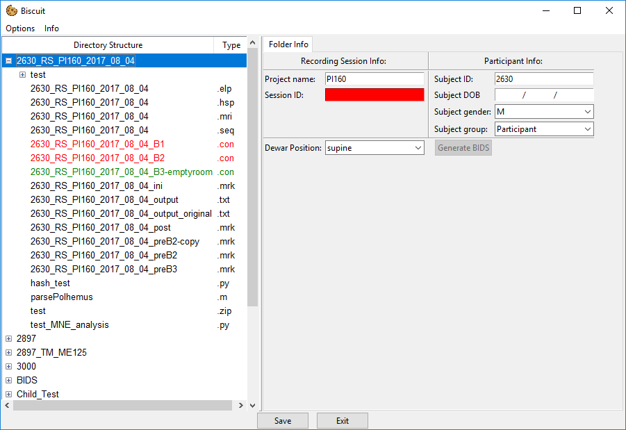
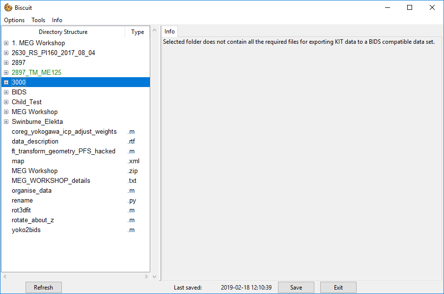
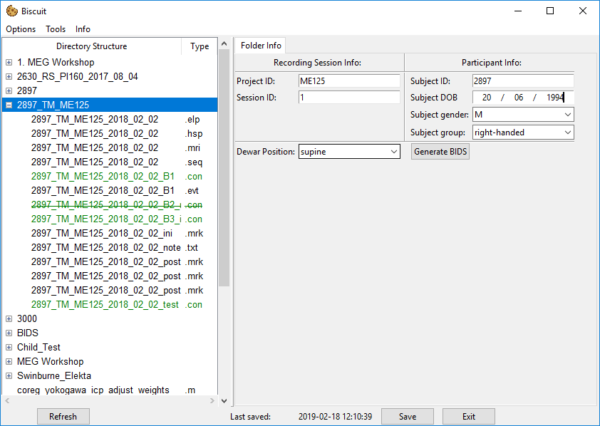
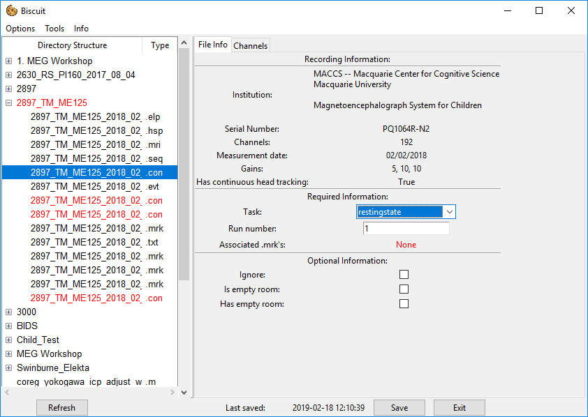
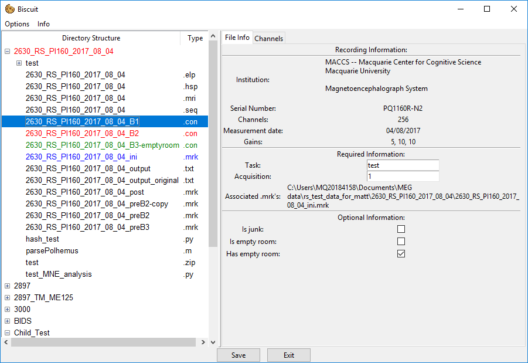

Converting KIT data
To convert KIT we need to do a few steps.
Because KIT data consists of multiple files unlike Elekta data which consists of a single .fif file, the main object is the parent folder containing the .con, .mrk, .elp, and .hsp files.
KIT data folder
When you first click on a folder containing all the required files the info panel will be populated with a number of info boxes and entires: 
If you however select a folder which doesn't contain all the required files, the information panel will inform you of this 
Once you have entered all the required information into the text boxes, the Generate BIDS button will become click-able:

For this to occur you must have also entered all the required information for any .con files within the folder as BIDS conversion can only proceed once all required files have the necessary information.
.CON file window

The .con file is the primary building block of KIT data and as such eash one requires a reasonable amount of information for BIDS conversion to happen.
Experimental information
Required Information
- Task: A shorthand identifier for the task performed.
- Acquisition: Synonymous with
run. An identifier for the run or block number (often just1,2etc.). - Associated .mrk's: A list of any
.mrkfiles that are associated with this.confile. Details on how to do this here
Optional Information
- Is junk: This indicates that the
.confile isn't needed as part of the data set. The file will not be copied to the BIDS folder. - Is empty room: If this is selected the file is specified as the empty room data. Empty room data is copied to a different location and named based on the date of the recording. You should only select one empty room recoring per day otherwise any other existing empty room recording will be overwritten by the new one.
- Has empty room: If this is selected the BIDS data will contain a path pointing to the location of empty room file from the same recording day. Note that there is not check on whether or not this empty room file actually exists as this data can be produced after the BIDS conversion occurs for this file. If you do not have any empty room data that was taken on the same day as this con file, do not check this box as the data will not be correct.
Channel Information
It is often important to specify if a certain channel is bad, or if a channel has any trigger information on it so that MNE can process this information properly and MNE-BIDS can produce the correct event information on export.
If you have set up any default channels when setting up your project defaults, then you will automatically see any channels specified as trigger channels in the channel tab, along with their default trigger description.
You can however add any other channel detected in the .con file to add to the list if you need to add extra trigger channels for the particular recording.
Associating a .mrk file
It is crucial for each .con file to know what .mrk file was used during the recording.
We can associate a .con file with an .mrk file in one of 3 different ways, all achieved by right-clicking on the .mrk or .con file in question.
- Right-click on a
.confile and selectassociate. This will prompt you to select an.mrkfile to associate with the.confile. You can do this by right-clicking the.mrkfile you wish to associate and then selectingassociate. - Right-click on an
.mrkfile and selectassociate. Same as above but you select the.confile the.mrkis to be associated with. - Right-click on an
.mrkfile and selectassociate with all. This will associate the selected.mrkfile with every.confile in the same directory.
Once an .mrk has been associated with a .con file, selecting a .con file will highlight any associated .mrk files in blue in the file treeview on the left hand side. You can use this to confirm that you have associated the correct .mrk file with the correct .con file.

Exporting the data
When all the required information has been entered, the Generate BIDS button will become active.
To export you simply press this button once and a popup will appear which gives the current progress of the export process.
Once the conversion is done the popup will close and the data will available in the BIDS folder that will be in the file view.